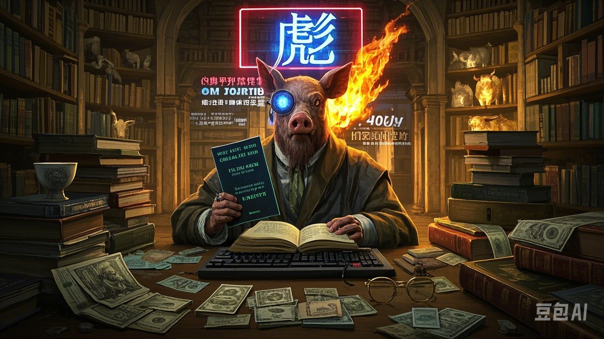

在拉康的精神分析框架中，“猪彪”是一个漂浮的能指——它没有固定所指，却在集体无意识中引发强烈情感共振： 象征界：在主流话语中，“彪”常关联“彪悍”“莽撞”，但前缀“猪”强行赋予其笨拙性，形成矛盾修辞。 实在界：当人怒吼“你就是个猪彪！”时，实则是面对他者凝视时的焦虑爆发，一种对自我无力感的转嫁。 哲学暴论：猪彪是我们这个时代的精神分裂症候——既渴望野蛮生长（彪），又无法摆脱被规训的宿命（猪）。
福柯的权力话语理论在猪彪语境下崩塌： 反规训：当你说“我偏要猪彪！”时，实则是用粗鄙对抗精致化的社会表演，如同第欧根尼在木桶里对亚历山大喊：“别挡住我的阳光！” 新生存美学：猪彪者通过主动污名化自身（“对，我就是猪彪”），达成对权力评判体系的免疫——这比尼采的“超人”更接地气，堪称**“超猪”哲学**。 案例：直播博主故意表演“猪彪行为艺术”（比如用头撞西瓜），实则是用自毁式狂欢解构“体面人生”的虚伪。

阿多诺会如此分析： 正题：“猪彪”作为贬义词，象征未启蒙的蒙昧状态。 反题：亚文化将“猪彪”重构为褒义词（“彪得可爱”），是对工具理性的反抗。 合题：当企业开始用“猪彪精神”给员工打鸡血时（“像猪彪一样突破极限！”），批判理论彻底失效——资本主义连反抗符号都能吞食。 警示：猪彪正在成为新型意识形态鸦片，让我们在嘲笑中忘记真正的压迫。
胡塞尔的方法论下： 悬置判断：抛开所有对“猪彪”的预设，直面其现象——你会发现它只是一串声波（zhū biāo）或笔画，但此刻你的嘴角已不自觉上扬。 本质直观：这种发笑冲动揭示了人类认知的荒谬根基——我们天生会对“不协调性”发笑（猪+彪=憨猛悖论）。 延伸：当AI学会用“猪彪”骂人时，是否意味着它已理解人类的痛苦本质？
萨特会说：“猪彪者”比“存在主义者”更彻底： 他们不纠结“存在还是虚无”，直接选择存在得轰轰烈烈（参考《愤怒的公牛》拳击手形象）。 其行动逻辑是：“我猪彪，故我在”（Cogito pig-bo ergo sum）。
存在主义食谱： 意识到人生本无意义（猪） 但依然选择疯癫燃烧（彪） 佐以辣椒和啤酒
在这个意义消散的时代，“猪彪”提供了最低成本的崇高体验—— 对个人：它是卸下人格面具的泄压阀 对社会：它是底层抵抗的噪声政治 对哲学：它证明黑格尔错了，“实在的就是荒诞的” （此刻，一只苍蝇飞过你的屏幕，你突然顿悟：原来它才是真正的猪彪。） 课后思考：如果苏格拉底活在今天，他会不会边喝毒酒边喊“这酒够彪！”？🐷💥